NCERT Solutions Class 9 Science Chapter 12 Sound – Here are all the NCERT solutions for Class 9 Science Chapter 12. This solution contains questions, answers, images, step by step explanations of the complete Chapter 12 titled Sound of Science taught in class 9. If you are a student of class 9 who is using NCERT Textbook to study Science, then you must come across Chapter 12 Sound. After you have studied lesson, you must be looking for answers of its questions. Here you can get complete NCERT Solutions for Class 9 Science Chapter 12 Sound in one place. For a better understanding of this chapter, you should also see Chapter 12 Sound Class 9 notes , Science.
NCERT Solutions for Class 9 Science Chapter 12 Sound
Topics and Sub Topics in Class 9 Science Chapter 12 Sound:
- Sound
- Production of Sound
- Propagation of Sound
- Reflection of Sound
- Range of Hearing
- Applications of Ultrasound
- Structure of Human Ear
These solutions are part of NCERT Solutions for Class 9 Science. Here we have given Class 9 NCERT Science Text book Solutions for Chapter 12 Sound.
IN-TEXT QUESTIONS SOLVED
NCERT Textbook for Class 9 Science – Page 162
Question 1. How does the sound produced by a vibrating object in a medium reach your ear?
Answer: Air is the commonest material through which sound propagates. When vibrating objects, like prongs of a tuning fork move forward, they push the molecules of the air in front of them. This in turn compresses the air, thus creating a region of high pressure and high density called compression. This compression in the air travels forward. When the prongs of the tuning fork move backward, they create a region of low pressure in the air, commonly called rarefaction.
This region has low pressure, low density, and more volume. As the tuning fork continues to vibrate, the regions of compression in the air alternate with the regions of rarefaction. These regions alternate at the same place. The energy of vibrating tuning fork travels outward. This energy which reaches the ears, makes the eardrums to vibrate and thus we hear sound
More Resources for CBSE Class 9
- NCERT Solutions
- NCERT Solutions Class 9 Maths
- NCERT Solutions Class 9 Science
- NCERT Solutions Class 9 Social Science
- NCERT Solutions Class 9 English
- NCERT Solutions Class 9 Hindi
- NCERT Solutions Class 9 Sanskrit
- NCERT Solutions Class 9 IT
- RD Sharma Class 9 Solutions
NCERT Textbook for Class 9 Science – Page 163
Question 1. Explain how sound is produced by your school bell.
Answer: Air is the commonest material through which sound propagates. When school bell is rung, it pushes the molecules of the air in front of it. This in turn compresses the air, thus creating a region of high pressure and high density called compression. This compression in the air travels forward. When the bell moves back, it creates a region of low pressure in the air, commonly called rarefaction. This region has low pressure, low density, and more volume. As the bell continues to vibrate, the regions Of compression in the air alternate with the regions of rarefaction. These regions alternate at the same place. The energy of vibrating bell travels outward. This energy which reaches the ears, makes the eardrums to vibrate and thus we hear sound.
Question 2. Why are sound waves called mechanical waves ?
Answer: Some mechanical energy is required to make an object vibrate. Sound energy cannot be produced on its own. The mechanical energy Of vibrating object travels through a medium and finally reaches the ear. Therefore, the sound waves are called mechanical waves.
Formulae Handbook for Class 9 Maths and ScienceEducational Loans in India
Question 3. Suppose you and your friend are on the moon. Will you be able to hear any-sound produced by your friend ?
Answer: No, I will not be able to hear sound, because moon has no atmosphere. Therefore, no sound waves can travel to your ears and, therefore, no sound is heard.
Class 9 Science NCERT Textbook – Page -I
Question 1. Which wave property determines (a) loudness, (b) Pitch ?
Answer: (a) The amplitude of the wave determines the loudness; more the amplitude of a wave, more is the loudness produced.
(b) The pitch is determined by the frequency of the wave. Higher the frequency of a wave more is its pitch and shriller is the sound.
Question 2. Guess which sound has a higher pitch; guitar or car horn ?
Answer: Car horn has a higher pitch than a guitar, because sound produced by the former is shriller than the latter.
NCERT TextBook Class 9 Science Page 166 -II
Question 1. What are wavelength, frequency, time period and amplitude of a sound wave ?
Answer: Frequency: The number of compressions or rarefactions taken together passing through a point in one second is called frequency.
Time Period: It is the time taken by two consecutive compressions or rarefactions to cross a point.
Amplitude: It is the magnitude of maximum displacement of a vibrating particle about its mean position.
Question 2. How are the wavelength and frequency of a sound wave related to its speed ?
Answer: Speed of sound Frequency x Wavelength
Question 3. Calculate the wavelength of a sound wave whose frequency is 220 Hz and speed is 440 m s-1 in a given medium.
Answer: Frequency = 220 Hz
Speed of sound = 440 m s-1
We know speed of sound Frequency x Wavelength = 220 x Wavelength
Wavelength = \(\frac { V }{ \vartheta } \) = \(\frac { 440 }{ 220 } \) = 2m
Question 4. A person is listening to a tone of 500 Hz sitting at a distance of 450 m from the source Of the sound. What is the time interval between successive compressions from the source ?
Answer:
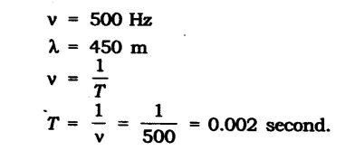
Question 5. Distinguish between loudness and intensity of sound.
Answer: The loudness depends on energy per unit area of the wave and on the response of the ear but intensity depends only on the energy per unit area of the wave and is independent of the response of the ear.
Question 6. In which of the three media, air, water or iron, does sound travel the fastest at a particular temperature ?
Answer: Sound travels fastest in iron as compared to water and air.
An echo is returned in 3 s. mat is the distance of the reflecting surface from the source, given the speed of sound is 342 m s-1
Question 7. Why are the ceilings of concert halls curved ?
Answer: The ceilings of concert halls are curved because sound after reflection from it reaches all the corners of the hall and is audible to each person in the hall.
Question.8.What is the audible range of the average human ear ?
Answer. An average human ear can hear sound waves between frequencies 20 Hz to 20,000 Hz.
Question 9. What is the range of frequencies associated with (a) Infra sound ? (b) Ultrasound ?
Answer: (a) Infra sound : Sound waves between the Frequencies 1 and 20 Hz.
(b) Ultrasound : Sound waves of the frequencies above 20,000 Hz.
Extra Questions for CBSE Class 9 Science Chapter 12 Sound
Question 1. What is sound and how is it produced ?
Answer: Sound is mechanical energy which produces a sensation of hearing. When an Object is set into vibrations, sound is produced.
Question 3. Cite an experiment to show that sound needs a material medium for its propagation.
Answer: Take an electric circuit which consists of a cell, a switch and an electric bell arranged inside a bell jar, which stands on the platform of an evacuating pump. The switch of the bell is pressed to close the electric circuit. When there is air within the bell jar, sound is heard. Air is now pumped out of the bell jar. When the air is completely removed from the bell jar, no sound is heard as it is obvious from fig. because the medium of air which has to carry energy from the bell to the bell jar is removed. It shows that sound needs material medium for its propagation.
Question 4. Why is sound wave called a longitudinal wave ?
Answer:Sound wave is called longitudinal wave because the particles of the medium vibrate in the direction of the propagation of wave.
Question 5. Which characteristic of the sound helps you to identify your friend by his voice while sitting with others in a darkroom ?
Answer: The characteristic of sound is quality or timbre.
Question 6. Flash and thunder are produced simultaneously. But thunder is heard a few seconds after the flash is seen, why ?
Answer: Speed of sound is 330 m/sec in air medium at 0°C. Whereas speed of light is 3 x 108m/sec. When we compare the speed of light with that of speed of sound, speed of light is greater than that of speed of sound. Therefore thunder is heard a few seconds after the flash is seen.
Question 7. A person has a hearing range from 20 Hz to 20 kHz. What are the typical wavelengths of sound waves in air corresponding to these two frequencies? Take the speed of sound in air as 344 ms-1.
Answer:

Question 8. Two children are a± opposite ends of an aluminium rod. One strikes the end of the rod with a stone. Find the ratio of times taken by the sound wave in air and in aluminium to reach the second child.
Answer:
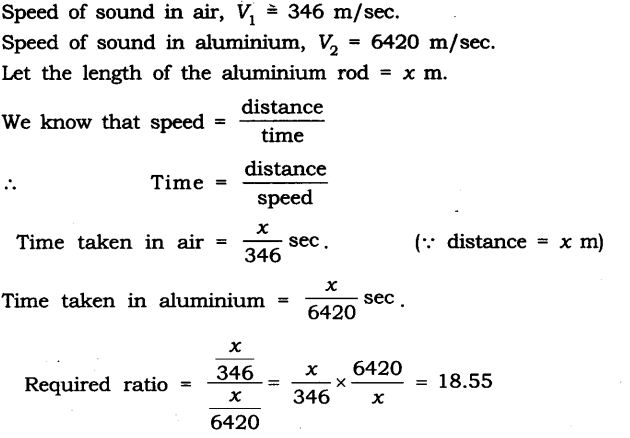
Question 9. The frequency of a sources/ sound is 100 Hz. How many times does it vibrate in a minute?
Answer:
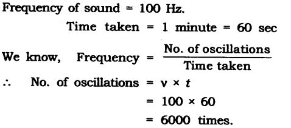
Question 10. Does sound follow the same laws of reflection as light does? Explain.
Answer: Yes. Sound follows the same laws of reflection as that of light because,
(i) Angle of incidence of sound is always equal to that of angle of reflection of sound waves.
(ii) The direction in which sound is incident, the direction in which it is reflected and normal all lie in the same plane.
Question 11. When a sound is reflected from a distant object, an echo is produced. Let the distance between the reflecting surface and the source of sound production remains the same. Do you hear echo sound on a hotter day?
Answer:
Time is inversely proportional to the speed. As the temperature increases, the speed increases. Thus on a hot day due to high temperature the speed of sound increases. Hence the time will decrease and we can hear the echo sooner.
Question 12. Give two practical applications of reflection of sound waves.
Answer: Reflection of sound is used in megaphones, horns and musical instruments such as trumpets and shehna. It is used in stethoscope for hearing patient’s heartbeat. Ceilings of the concert halls are curved, so that sound after reflection reaches all comers of the hall. (Any two practical applications can be written).
Question 13. A stone dropped from the top of a tower 500 m high into a pond of water at the base of the tower. When is the splash heard at the top? Giving, g = 10 ms-2 and speed of sound = 340 m s-1.
Answer:
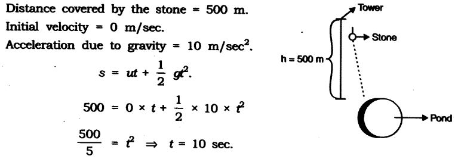
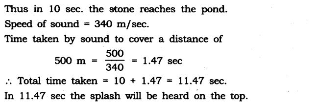
Question 14. A sound wave travels at a speed of 339 ms-1. If its wavelength is 1.5 cm, what is the frequency of the wave? Will it be audible?
Answer:
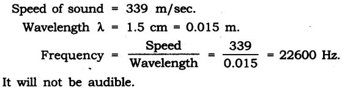
Question 15. What is reverberation? How can it be reduced?
Answer: The persistence of sound in an auditorium is the result of repeated reflections of sound and is called reverberation.
To reduce the undesirable effects due to reverberation, roofs and walls of the auditorium are generally covered with sound absorbent materials like compressed fiberboard, rough plaster or draperies. The seat materials are also selected having sound absorption properties.
Question 16. What is loudness of sound? What factors does it depend on?
Answer: The loudness of sound is determined by its amplitude. The amplitude of the sound wave depends upon the force with which an object is made to vibrate. Loud sound can travel a larger distance as it is associated with higher energy. A sound waves spreads out from its source. As it moves away from the source its amplitude as well as its loudness decreases.
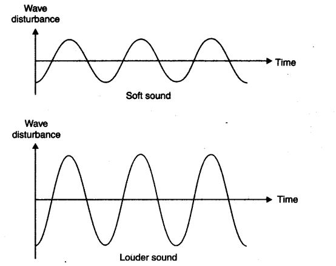
Question 17. Explain how bats use ultrasound to catch a prey.
Answer: Bats search out its prey by emitting and detecting reflections of ultrasonic waves. The high-pitched ultrasonic squeaks of bat are reflected from the obstacles or prey and return to bat’s ear. The nature of reflection tells the bat where the obstacle or prey is and what it is like.
Question 18. How is ultrasound used for cleaning?
Answer: Ultrasound is used to clean parts located in hard-to-reach places (i.e.) spiral tube, odd shaped parts, electronic components etc. Objects to be cleaned are placed in a cleaning solution and ultrasonic waves are sent into the solution. Due to the high frequency, the dust particles, grease get detached and drop out. The objects thus get thoroughly cleaned.
Question 19. Explain the working and application of a sonar.
Answer: Working: SONAR Consists of a transmitter and a detector and is installed in a boat or a ship as shown in the fig. The transmitter produces and transmits ultrasonic waves. These waves travel through water and after striking the object on the seabed, get reflected back and are sensed by the detector. The detector converts the ultrasonic waves into electrical signals which are appropriately interpreted. The distance of the object that reflected the sound wave can be calculated by knowing the speed of sound in water and the time interval between the transmission and reception of the ultrasound.
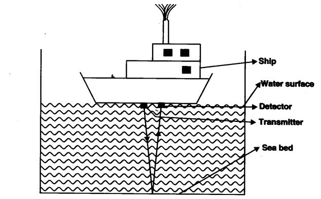

Question 20. A sonar device on a submarine sends out a signal and receives an echo 5 s later. Calculate the speed of sound in water if the distance of the object from the submarine is 3625 m.
Answer: Time taken between transmission and reception of signal = 5 sec.
Distance of the object from the sub marine = 3625 m.

Question.21. Explain how defects in a metal block can be detected using ultrasound.
Answer. Ultrasounds can be used to detect cracks and flaws in metal blocks. Metallic components are used in the construction of big structures like buildings, bridges, machines and scientific equipment’s. The cracks or holes inside the metal blocks, which are invisible from outside reduces the strength of the structure. Ultrasonic waves are allowed to pass through the metallic block and detectors are used to detect the transmitted waves. If there is even a small defect, the ultrasound gets reflected back indicating the presence of the flaw or defect.
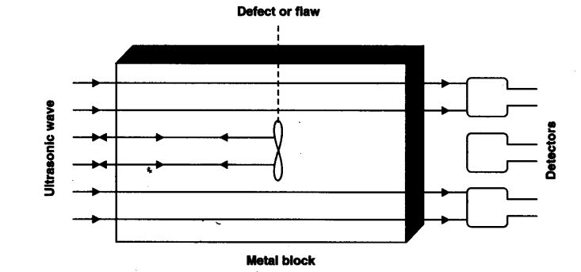
Question 22. Explain how the human ear works.
Answer: The outer ear is called “pinna. It collects the sound from the surroundings. The collected sound passes through the auditory canal. At the end of the auditory canal there is a thin membrane called the eardrum or the tympanic membrane. When a compression of the medium reaches the eardrum the pressure on the outside of the membrane increases and forces the eardrum inward. Similarly, the eardrum moves outward when a rarefaction reaches it. In this way the eardrum vibrates. The vibrations are amplified several times by three bones (the hammer, anvil and stirrup) in the middle ear. The middle ear transmits the amplified pressure variations received from the sound wave to the inner ear. In the inner ear, the pressure variations are turned into electrical signals by the cochlea. These electrical signals are sent to the brain via the auditory nerve and the brain interprets them as sound.
NCERT Solutions for Class 9 Science Chapter 12 Sound (Hindi Medium)
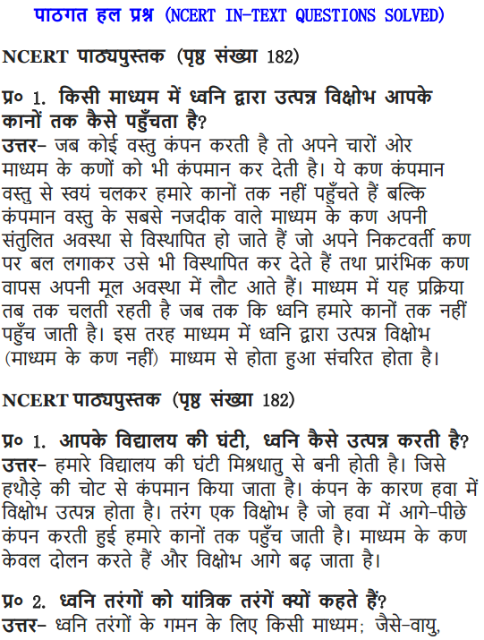
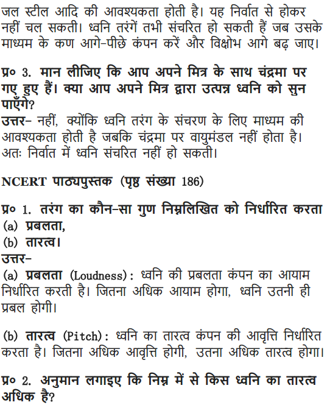
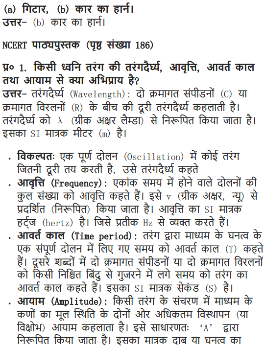
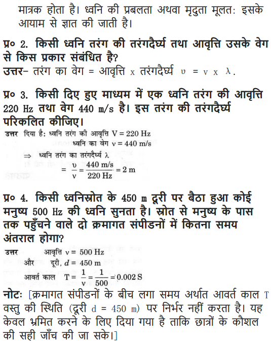
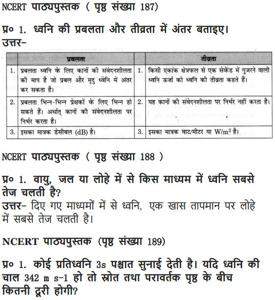
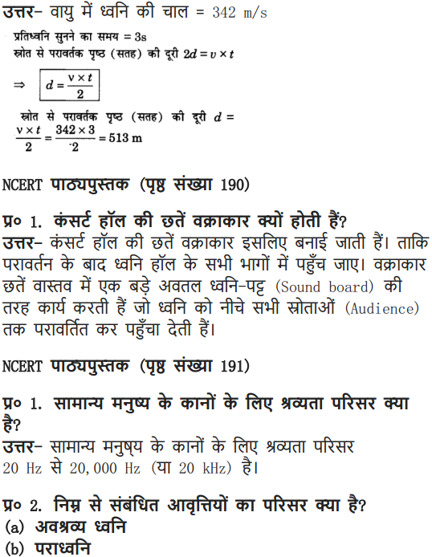
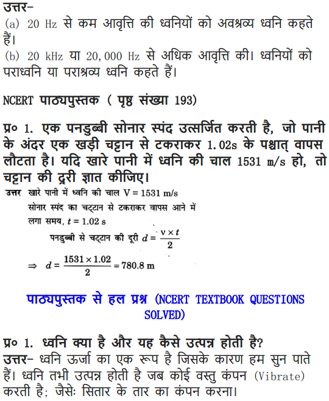
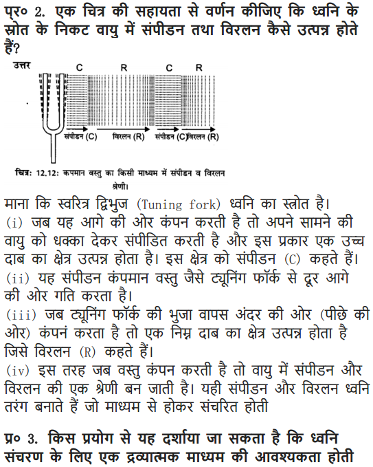
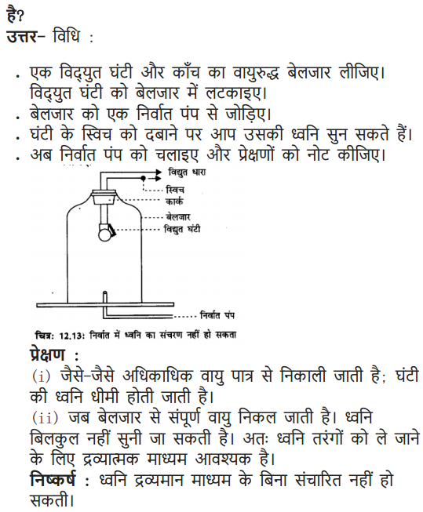
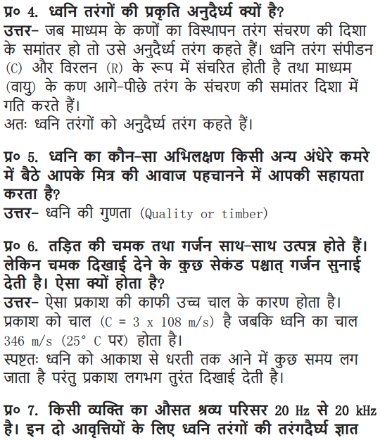
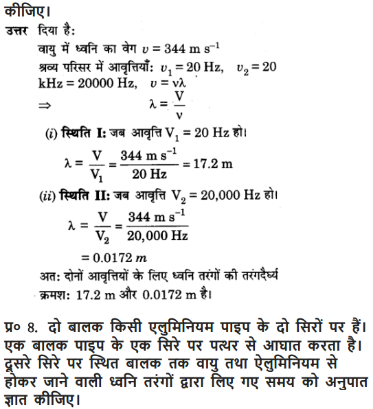
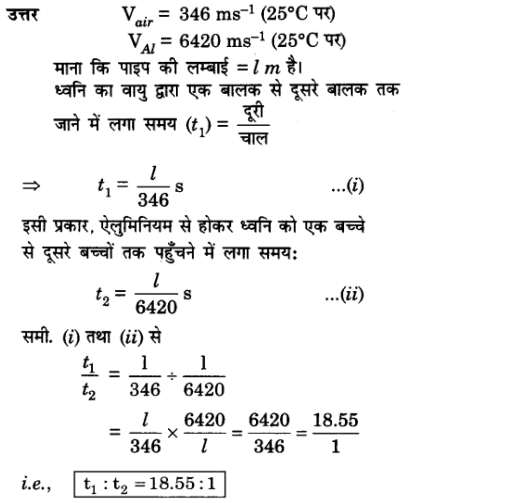
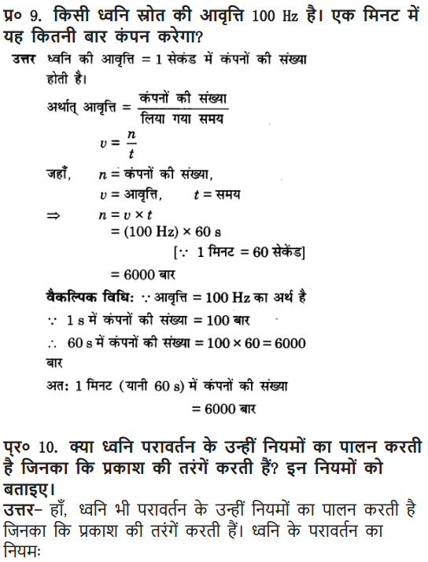
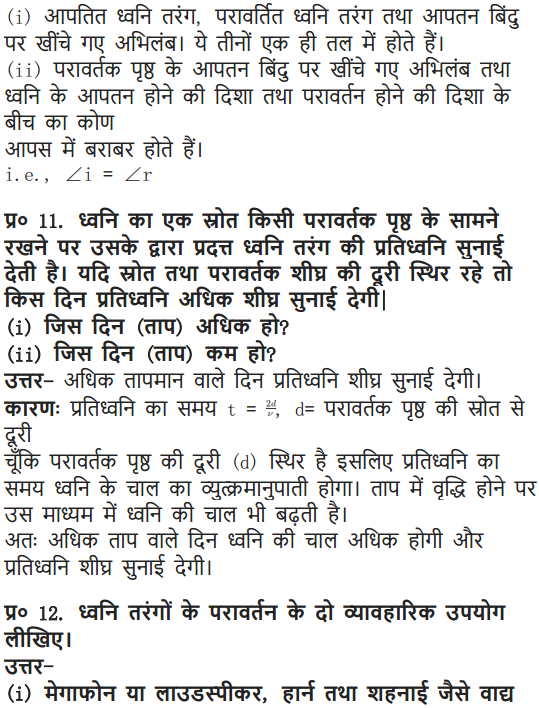
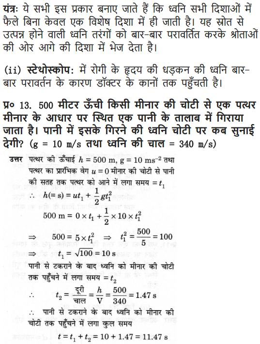
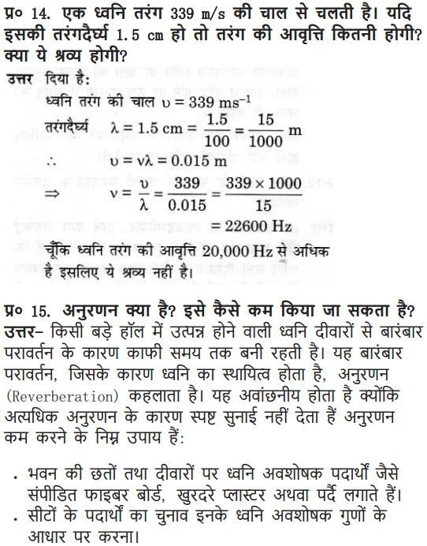
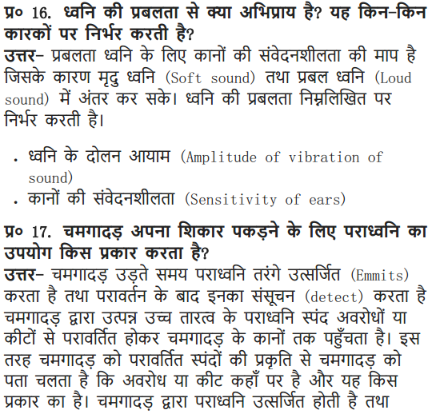
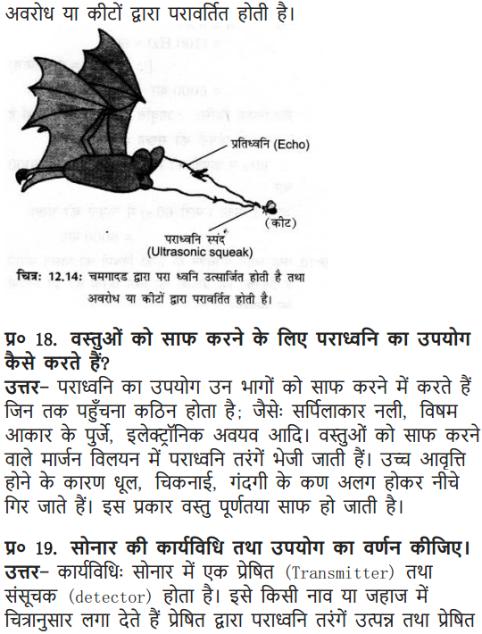
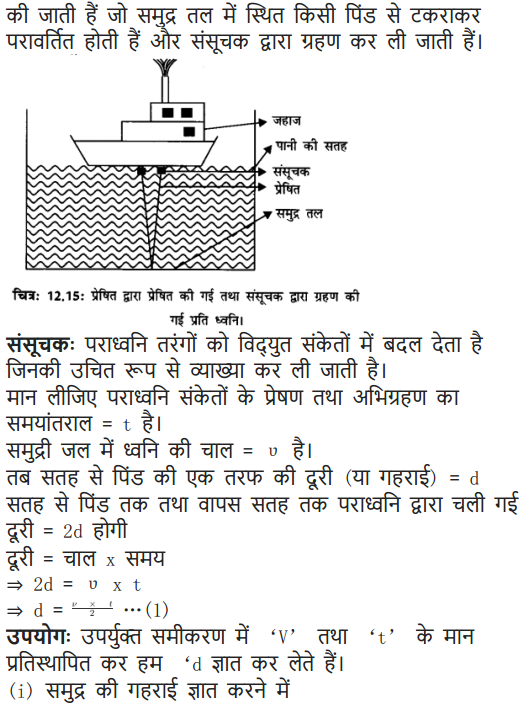
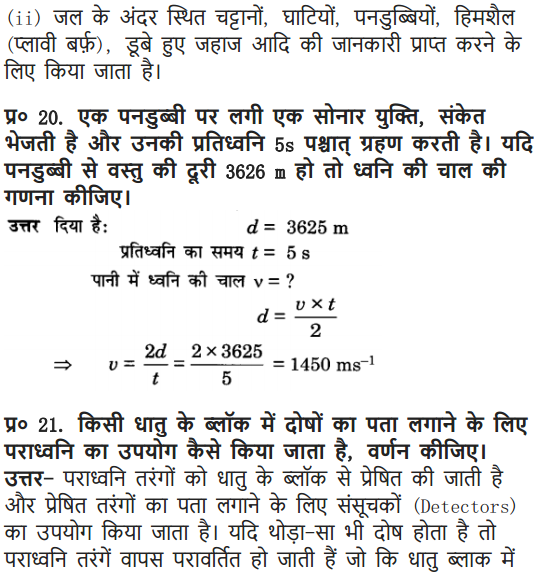
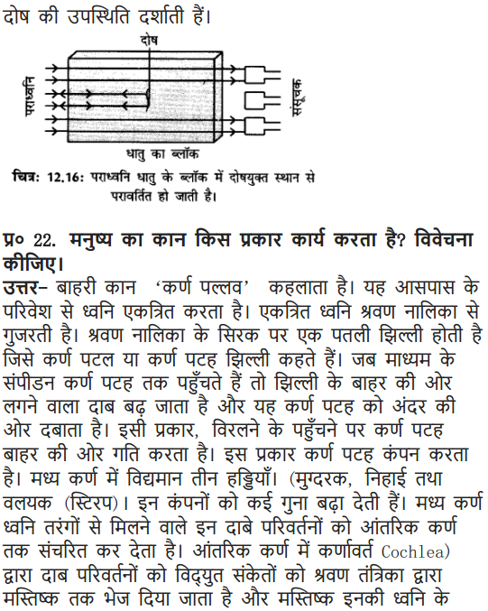
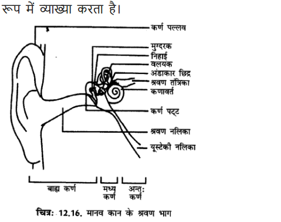
MORE QUESTIONS SOLVED
NCERT Solutions for Class 9 Science Chapter 12 Multiple Choice Questions
Question 1. A wave in slinky travelled to and fro in 5 sec the length of the slinky is 5 m. The velocity of wave is
(a) 10 m/s (b) 5 m/s
(c) 2 m/s (d) 25 m/s
Answer: (c)
Question 2. Loud sound can travel a larger distance, due to
(a) higher amplitude (b) higher energy
(c) high frequency (d) high speed
Answer (c)
Question 3. We can distinguish between sound having same pitch and loudness, this characteristic of sound is
(a) tone (b) note
(c) pitch (d) timber
Answer: (b)
Question 4. Speed of sound depends upon
(a) temperature of medium
(b) pressure of medium
(c) temperature of source producing sound
(d) temperature and pressure of medium
Answer: (d)
Question 5. Speed (s), wavelength’ (X) and frequency (v) of sound are related as
(a) s =u x v (b) v=s x u
(c) u=s x v (d)u=s/v
Answer: (c)
Question 6. To hear a distinct echo the time interval between the original sound and the reflected sound must be:
(a) 0.2 s (b) 1 s
(c) 2 s (d) 0.1 s
Answer: (d)
Question 7. Reverberation of sound is used in
(a) stethoscope (b) trumpets
(c) megaphone (d) all of these
Answer: (d)
Question 8. Children under the age of 5 can hear upto:
(a) 20 kHz (c) 20 Hz
(b) 25 kHz (d) 25 Hz
Answer: (b)
Question 9. Dolphins, bats and porpoise uses
(a) ultrasound (c) both (a) and (b)
(b) infrasound (d) none of these
Answer: (a)
Question 10. The part of human ear that converts sound vibrations into electrical signals are:
(a) Tympanic membrane (c) Stirrup
(b) Hammer (d) Cochlea
Answer: (d)
NCERT Solutions for Class 9 Science Chapter 12 Very Short Answer Type Questions
Question 1. Is sound wave longitudinal or transverse?
Answer: Sound wave is longitudinal in nature.
Question 2. What is the relation between frequency (v) and time period of a sound wave?
Answer: v = 1/T
Frequency is inversely proportional to time period.
Question 3. In which of the three media air, water or steel does sound travel the fastest?
Answer: Sound travels fastest in steel.
Question 4. Which has a higher pitch—the sound of a whistle or that of a drum?
Answer: The sound of whistle has higher pitch.
Question 5. What is pitch?
Answer: The way our brain interprets the frequency of an emitted sound is called the pitch.
Question 6. How can we distinguish one sound from another having the same pitch and loudness?
Answer: The quality or timber of sound helps us to distinguish one sound from another having the same pitch and loudness.
Question 7. What is the audible range of frequency for human beings?
Answer: The audible range of frequencies for human beings is 20 Hz to 20,000 Hz.
Question 8. What is one Hz?
Answer: Hz is the unit of frequency, called as Hertz. One Hertz is equal to one cycle per second.
Question 9. Define speed of sound.
Answer: The speed of sound is defined as the distance travelled per unit time by compression or rarefaction.
Question 10. What is ‘note’ of sound?
Answer: The sound produced due to a mixture of several frequencies is called a note, it is pleasant to listen to.
Question 11. Find the frequency of a wave whose time period is 0.002 second.
Answer:
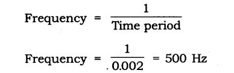
Question 12. What is the time period-of sound wave?
Answer: The time taken by two consecutive compressions or rarefactions to cross a fixed points is called the time period of the wave.
Question 13. What is the minimum distance required to hear distinct echo?
Answer: The minimum distance of the obstacle from the source of sound should be 17.2 m.
Question 14. What is reverberation?
Answer: The repeated reflection that results in the persistence of sound is called reverberation.
Question 15. What is SONAR?
Answer: SONAR is—Sound Navigation and Ranging. It is a device that uses ultrasonic waves to measure the distance, direction and speed of underwater objects by getting the reflection of sound.
Question 16. What is ‘ultrasonic’ and ‘infrasonic’ sound wave?
Answer: Sound waves with frequencies below the audible range (less than 20 Hz) are termed as “infrasonic” and those sound waves with frequencies above the audible range (more than 20000 Hz) are termed as “ultrasonic”.
Question 17. What should be the time interval between the originated sound and the reflected sound to be heard distinctly?
Answer: To hear a distinct sound the time interval between the originated sound and the reflected sound must be at least 0.1 second.
NCERT Solutions for Class 9 Science Chapter 12 Short Answer Type Questions
Question 1. What is a medium? Give two examples.
Answer: The matter or substance through which sound is transmitted is called a medium. It can be solid, liquid or gas. Example, air, water, metals.
Question 2. Define wave-motion.
Answer: A wave is a disturbance that moves through a medium when the particles of the medium set neighbouring particles into motion. The particles of the medium do not move forward but the disturbance is carried forward.
Question 3. What is ‘sonic boom’?
Answer: When an object just attains a supersonic speed, it causes shock waves in air. As a result there is large change in air pressure. This results in sonic boom.
Question 4. Why does sound become faint with distance?
Answer: Sound is a form of energy. As it moves away from the source its amplitude as well as its loudness decreases. The energy also get transformed in vibration of the particles of the medium.
Question 5. Why do we say that sound waves are longitudinal?
Answer: Longitudinal waves need medium for propagation. The sound energy travel in the same line as the particles oscillate.
———— > Sound energy
<————>Particles oscillation
It forms compression and rarefaction for the longitudinal wave motion. Sound wave shows all the characteristics of longitudinal wave so it is called as longitudinal wave.
Question 6. Differentiate between longitudinal wave and transverse wave.
Answer:

Question 7. What is crest and trough?
Answer: When a wave is propagated as represented below. A peak is called the crest and a valley is called the trough of a wave.
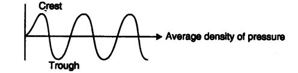
Question 8. The maximum oscillation disturbance of particles of air forms crest and trough. What is echo? Why don’t we get echo in small room?
Answer: The distinct sound heard after reflection of sound from the source is called echo. For echo, the distance of reflecting surface from the source should be more than 17.2 m.
Question 9. What is velocity of sound? Why does sound travel faster in summer season than in winter?
Answer: Velocity of sound is- the speed of sound in a given medium at a given temperature. As the temperature increases the speed of sound also increases, hence in summer the sound travels faster than in winter.
Question 10. Draw a graphical representation of the wave shape for (a) low pitched sound and (b) a high pitched sound.
Answer:
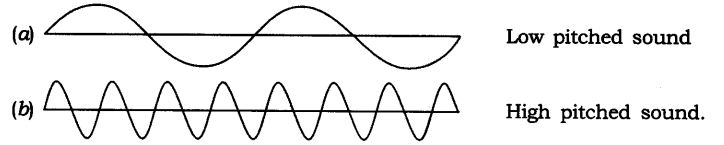
Question 11. Give two applications of echo/reflection of sound.
Answer: (i) Ships use reflection of sound technique “SONAR” which helps in locating the depth, distance, direction and speed of underwater objects.
(ii) Ceilings of concert halls are curved so that sound after reflection reaches all comers of the hall.
Question 12. Define amplitude time period and frequency of sound wave.
Answer: Amplitude: The magnitude of the maximum disturbance in the medium on either side of the mean value is called amplitude of the wave. Its unit is meter.
Time Period: The time taken by two consecutive compressions or rarefactions to cross a fixed point is called the time period of the wave.
Frequency: The number of oscillation, occurring per unit time is called the frequency of sound wave.
Question 13. A sound wave causes the density of air at a place to oscillate 1200 times in 2 minutes. Find the time period and frequency of the wave.
Answer:
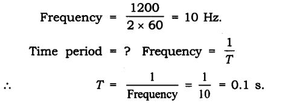
Question 14. Give 3 uses of ultrasound.
Answer: Use of ultrasound:
1. Ultrasound is used to detect cracks and flaws in metal blocks.
2. It is used in ‘echo-cardiography’, the ultrasonic waves are made to reflect from various parts of the heart and form the image of the heart.
3. It is used in ‘ultrasonography’, to detect the image of organs or to detect the abnormalities in the organs. It is also used to examine the foetus during pregnancy to detect congenital defects.
Question: 15. What is the function of middle ear?
Answer: Middle ear consist of three small bones called hammer, anvil and stirrup. These three bones receive the sound vibrations and increase the strength of these vibrations to amplify the vibrations received by ear-drum. These amplified vibrations are furthgr passed to the inner ear.
A ship sends out ultrasound that return from the seabed and is detected after 3.42 s.
Question 16. If the speed of ultrasound through seawater is 1531 m/s. What is the distance of the seabed from the ship?-
Answer: Time between transmission and detection t = 342 s.
Speed of ultrasound in seawater = 1531 m/s.
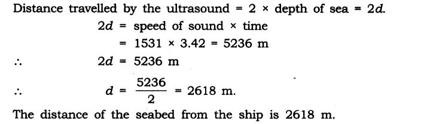
Question 17. Distinguish between tone, note and noise.
Answer: Tone: A sound of single frequency is called a tone.
Note: The sound which is produced due to a mixture of several frequencies is called a note.
Noise: The sound which is produced due to a mixture of several frequencies but is unpleasant to the ear is called noise.
Question 18: Establish the relationship between speed, wavelength and frequency of sound.
Answer: Speed of sound —» The distance travelled by a wave or a point on a wave (compression or rarefaction) per unit time.

Question 19. Which wave property determines
(a) loudness? (b) pitch?
Name the characteristic of the sound which help you to distinguish your friend’s voice while talking in a dark room.
Answer: (a) Loudness is determined by amplitude.
(b) Pitch is determined by frequency.
The quality or timber of sound helps us to distinguish our friend’s voice while talking in a dark room.
Question 20. A sound produces 13 crests and 15 troughs in 3 seconds. When the second crest is produced the first is 2 cm away from the source? Calculate.
(a) the wavelength (b) the frequency (c) the wave speed.
Answer:

NCERT Solutions for Class 9 Science Chapter 12 Long Answer Type Questions
Question 1. Sound cannot travel in vacuum. Describe an experiment to demonstrate this.
Answer: Sound is a mechanical wave and needs a material medium to propagate. It cannot travel in vacuum and can be shown by the following experiment.
• Take an electric bell and an airtight glass bell jar. The electric bell is suspended inside the airtight bell jar. Switch ‘ON’ the electric bell.
• Now, connect the bell jar to vacuum pump.
• Pump out the air from the jar, the sound becomes fainter, although the same current passes through the bell.
• Pump out some more air from the jar, a very feeble sound is heard.
• When the air is completely removed from the jar, no sound is heard.
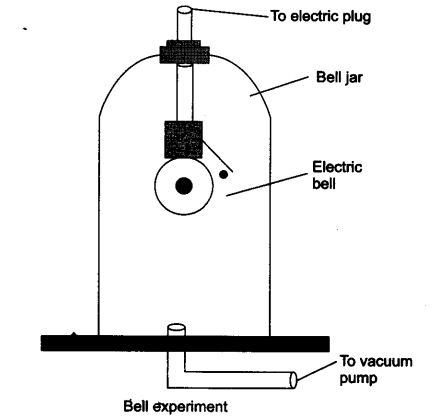
Question 2. Explain the structure of the human ear with the help of a diagram.
Answer:
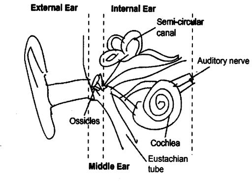
(a) Outer Ear: Pinna, auditory canal and tympanic membrane.
Pinna: It collects the sound from the surroundings.
Auditory Canal: The sound waves collected passes through this canal.
Tympanic Membrane: It is a thin membrane which receives the vibrations of sound. A compression reaches the eardrum, the pressure on the outside of the membrane increases and pushes the eardrum inward, and moves out when the rarefaction reaches.
(b) Middle Ear: Consists of three small bones called hammer, anvil and stirrup. The vibrations are received by these three bones and the strength of vibrations is increased i.e., the sound is amplified and passed to inner ear.
(c) Inner Ear: It consist of cochlea and auditory nerve.
Chochlea receives the amplified vibrations and convert them into electrical signals. These electrical signals are sent to the brain via the auditory nerve and the brain interprets the signals as sound.
Question 3. Given that sound travels in air at 340 m/sec, find the wavelength of the waves in air produced by 20 kHz sound source. If the same source is put in a water tank, what would be the wavelength of the sound waves in water? (Speed of sound in water = 1480 m/s.)
Answer:
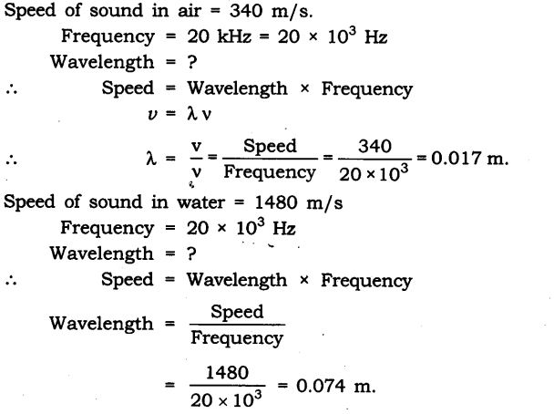
Question 4. A child watching Dussehra celebration from a distance sees the effigy of Ravana burst into flames and hears the explosion associated with it 2 sec after that. How far was he from the effigy if the speed of sound in air that night was 335 m/sec?
Answer:
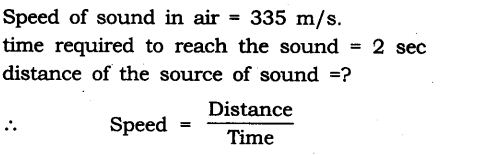
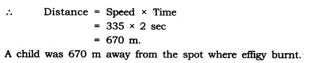
NCERT Solutions for Class 9 Science Chapter 12 Sound Activity-Based Questions
Question 1. • Take a tuning fork and set it vibrating by striking its prong on a rubber pad. Bring it near your ear.
• Do you hear any sound?
• Touch one of the prongs of the vibrating tuning fork with your finger and share your experience with your friends.
• Now, suspend a table tennis ball or a small plastic ball by a thread from a support. Touch the ball gently with the prong of a vibrating tuning fork.
• Observe what happens and discuss with your friends.
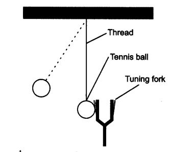
Answer: • Yes, we heard sound.
• If we touch the ball with tuning fork set into vibration, the ball gets displaced from its mean position and starts moving.
Question 2. • Fill water in a beaker or a glass up to the brim. Gently touch the water surface with one of the prongs of the vibrating tuning fork.
• Next dip the prongs of the vibrating tuning fork in water. .
• Observe what happens in both the cases.
• Discuss with your friends why this happens.
• Arrange them on a table near a wall.
• Keep a clock near the open end of one of the pipes and try to hear the sound of the clock through the other pipe.
• Adjust the position of the pipes, so that you can best hear the sound of the clock.
• Now, measure the angles of incidence and reflection and see the relationship between the angles.
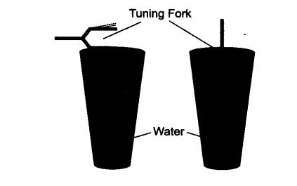
Answer: In both the cases, sound will be produced by the tuning fork which produces ripples. But in case (1) ripples are produced which will move up and down and in case (2) ripples are produced which will move in sideways.
Question 3. • Take a slinky. Ask your friend to hold one end. You hold the other end. Now stretch the slinky and give it a sharp push towards your friend.
• What do you notice? If you move your hand pushing and pulling the slinky alternatively, what will you observe?
• If you mark a dot on the slinky, you’ll observe that the dot on the slinky will move back and forth parallel to the direction of propagation of the disturbance.
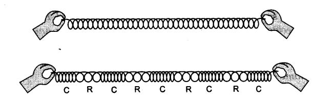
Answer: When we give a small jerk a hump is produced and this travels forward. When we give a sharp push continuous disturbance is produced. When we give a push or pull to the slinky, slinky starts moving in the forward and backward direction parallel to the direction of propagation of the disturbance.
Question 4. • Take two identical pipes. The length of the pipes should be sufficiently long.
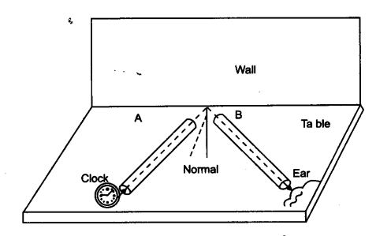
• Lift the pipes on the right .vertically to a small height and observe what happens.
Answer: (i) Reflection of sound is similar to reflection of light i.e. Angle of incidence = Angle of reflection.
(ii) If we lift the pipe vertically to a small height, well not be able to hear the sound through the other end of the pipe because Angle of incidence * Angle of reflection. Therefore the reflected ray will not travel through the pipe B.
NCERT Solutions for Class 9 Science Chapter 12 Sound Value-Based Questions
Question 1. Raj noticed that his pet dog was frightened and trying to hide in safe place in his house when some crackers were burst in the neighbourhood. He realized the problem and he decided not to burst crackers during diwali or for any other celebrations.
(a) What must be the range of crackers sound?
(b) Name two diseases that can be caused due to noise pollution.
(c) Name the values of Raj reflected in above act.
Answer: (a) The range of crackers sound must be between 20 Hz to 20 kHz.
(b) Two diseases that can occur due to noise pollution are heart attack and high blood pressure.
(c) Raj reflects the value of respecting sensitivity for animals and caring for animals.
Question 2. It is not advisable to construct houses near airports, in spite of that many new residential apartments are constructed near airports. Sumit files RTI and also complains the municipal office about the same.
(a) Why one should not reside near airport?
(b) Name other two places where there is noise-pollution.
(c) What value of Sumit is reflected in this act?
Answer: (a) The landing and taking off of the air-planes causes lot of noise pollution which may lead to deafness, high blood pressure and other health problems.
(b) The other two places where there is noise-pollution is, residing near the heavy traffic routes and railway stations or lines.
(c) Sumit shows participating citizen and moral responsibility values.